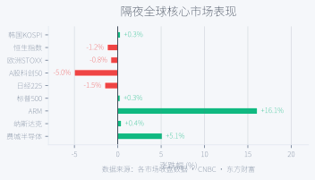
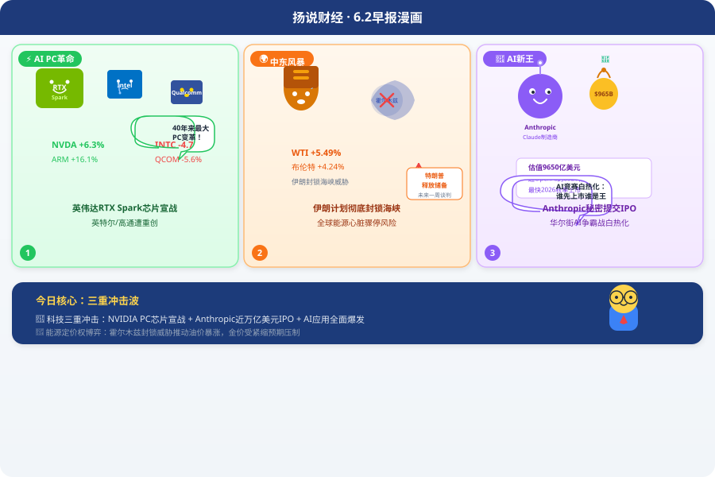
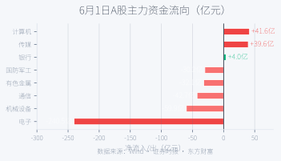
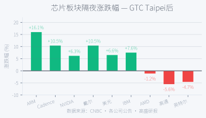
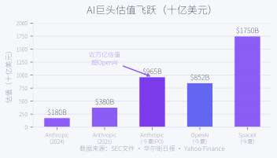
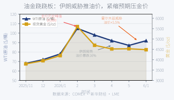

隔夜，两条完全独立的叙事线同时引爆。 黄仁勋在台北COMPUTEX扔出N1X超级芯片，英伟达正式向Intel/AMD宣战。同一时间，伊朗革命卫队宣布计划彻底封锁霍尔木兹海峡，油价暴涨5.5%。美股三大指数齐创历史新高。但今天最有意思的不是这两件事本身——而是它们通过同一条传导链缠绕在一起：油价→通胀预期→Fed路径→所有资产的重新定价。看懂这条链，就看懂了今天的市场。下面拆开来看。
| 市场 | 最新收盘 | 隔夜涨跌幅 | 备注 |
|---|
| 道琼斯工业指数 | 51,078.88 | +0.09% | 历史新高 |
| 标普500 | 7,599.96 | +0.26% | 历史新高，8连涨 |
| 纳斯达克 | 27,086.81 | +0.42% | 首破27,000 |
| 费城半导体 | 8,679.78 | +5.12% | 英伟达+6.3%领涨 |
| 上证指数 | 4,057.74 | -0.27% | 6月首日 |
| 创业板指 | 3,950.94 | -2.15% | 半导体重挫 |
| 科创50 | 1,663.69 | -5.00% | 连跌两日累跌10% |
| WTI原油 | $92.16 | +5.49% | 伊朗封锁威胁 |
| 布伦特原油 | $94.98 | +4.24% | 站上$95关口 |
| 现货黄金 | $4,483.04 | -1.26% | 一度跌破$4,448 |
| 10年美债收益率 | 4.78% | +8bp | ISM数据推升 |
| 美元指数 | 99.80 | +0.8% | ISM强劲提振 |
| VIX恐慌指数 | 16.05 | +4.77% | ⚠ 与指数新高背离 |
🚨 反常信号识别
VIX跳涨4.77%至16.05，与三大指数齐创历史新高的图景
形成罕见背离。通常指数上涨→波动率回落，但6月1日的情况恰好相反——投资者为本周AVGO/CRWD财报+周五非农+MOU签字时点等多重事件
提前买入对冲。这不是"恐慌"，而是"有组织的谨慎"。

隔夜全球市场：费城半导体+5.12%领跑，科创50-5%承压——AI叙事将全球科技与非科技切成两个世界
周一（6月1日）是一个罕见的"双主线日"。 两条彼此独立的叙事线几乎在同一时间触发，全球市场在它们各自的逻辑里剧烈分岔。但更关键的在于：它们通过同一条传导链——油价→通胀→Fed——相互纠缠。AI叙事推动科技股暴涨，能源叙事推动油价跳升，而通胀预期升温反过来压制了降息预期，间接影响了所有资产（来源：搜狐科技、CNBC、新华社）。
线一，英伟达N1X芯片。 黄仁勋在COMPUTEX 2026开幕演讲中，正式发布与微软、联发科联合研发的PC超级芯片RTX Spark（代号N1X），采用台积电3nm制程、Arm架构，集成20核Grace CPU + Blackwell GPU，AI算力高达1 Petaflop。黄仁勋称这是"从功能手机到智能手机般的跨越"。首批搭载设备由戴尔、联想、华硕、惠普、微星同步推出，2026年秋季上市。英伟达同时宣布Vera Rubin平台全面投产，N2X和N3X已在研发中（来源：搜狐科技、财联社、凤凰科技）。
线二，伊朗彻底封锁海峡。 伊朗革命卫队6月1日宣布，计划与"抵抗阵线"共同彻底封锁霍尔木兹海峡，并同步在曼德海峡开启行动。全球约20%的石油通过霍尔木兹海峡运输。伊朗同时暂停与美国通过中间人的谈判。特朗普回应称预计"未来一周内"达成协议，同时下令大规模释放战略石油储备。但伊朗最高领袖军事顾问雷扎伊强硬回应："霍尔木兹海峡由伊朗控制，武装部队的耐心是有限的。"（来源：新华社、央视新闻、华尔街见闻）
线三，隐藏在双主线之下的暗线—— Anthropic于6月1日向SEC秘密提交Form S-1上市申请，最新估值高达$9,650亿，已超越OpenAI的$8,520亿。高盛、摩根大通、摩根士丹利预计担任承销商，最快2026秋季登陆资本市场。这是AI行业的一个里程碑——Claude的制造商即将成为公众公司，OpenAI大概率随后跟上（来源：搜狐财经、ABC News、东方财富）。
⚡ 本周主轴传导链（核心框架）
美伊局势 → 油价
$92 (+5.5%) → 通胀预期升温（PCE 3.8%/ISM价格指数82.1）→ Warsh加息预期强化（12月加息概率40%）→ 实际利率维持高位 →
黄金承压、成长股估值受压
平行分支：ComputeX → N1X/Vera Rubin量产 → AI全产业链估值重估 → 半导体+5.12%
关键提示：本周的定价权在谁手里？
三条核心传导链决定本周资产走向：
① 美伊MOU若落地→油价$95跌至$80-85→通胀预期降温→Fed转向鸽派→利好科技股+黄金；若Trump拒签→油价重回$100+→紧缩预期锁定→承压
② 英伟达N1X+RTX Spark→Arm PC生态成型→x86垄断松动→利好台积电/联发科/Arm，承压Intel/AMD
③ 周五非农：>13万→加息预期强化；<10万→降息预期复燃。这是本周最大的宏观变量

6.2早报漫画：英伟达宣战PC芯片 / 伊朗计划封锁霍尔木兹 / Anthropic秘密IPO — 隔夜三枚炸弹
1A股6月开门"指数跌个股涨"，半导体重挫5%，煤炭逆势爆发
周一（6月1日）A股冲高回落，没能实现"开门红"。上证指数跌0.27%报4,057.74点，失守4,060；创业板指重挫2.15%报3,950.94点；科创50暴跌5.00%报1,663.69点，连续第二个交易日跌5%，两个交易日累计跌幅近10%（vs 同期标普500涨0.26%创新高——中美科技股走出完全相反的方向）。但全市场3,700余只个股上涨，近170只涨停——"指数跌、个股涨"的背后，是一场大规模的风格切换（来源：新浪财经、证券时报、东方财富）。
半导体板块是当日重灾区， 先进封装、光刻机、CPO概念领跌。电子板块全天净流出约240亿元，半导体遭121亿抛售。核心驱动：①大基金密集减持高位套现；②MSCI季调后千亿被动资金调仓；③长鑫科技百亿IPO过会分流流动性；④美伊局势反复导致资金从高弹性科技撤向防御板块（来源：财联社、证券时报）。
而另一边， 煤炭板块逆势大涨，多股涨停，直接催化剂是印尼煤炭出口新政策（单一窗口出口机制）。石油化工、能源设备、燃气紧随其后——夏季用能高峰叠加中东地缘风险，能源防御逻辑获得资金追捧。AI应用方向同样走强，AIGC概念、文化传媒获得资金净流入（来源：和讯、中山证券）。
6.2上午开盘： 创业板指大涨2.15%，上证微跌0.04%，科创50反弹1.39%。AI硬件全线回暖——CPO概念爆发（源杰科技+14%、光库科技+13%），光纤概念（亨通光电涨停创新高），PCB概念（鹏鼎控股+7%），AI PC概念（雷神科技+25%）。但全市场超4,100只个股下跌——大票拉指数，小票被抽血，典型的"指数回来了钱没回来"（来源：证券时报、凤凰财经）。
🔴 核心矛盾
6月1日 3,700股上涨 vs 科创50两天跌10%，6月2日上午 创业板涨2% vs 4,100股下跌——A股的结构性撕裂不但没缓解，反而在加剧。AI板块的内部轮动（硬件→应用→硬件）节奏极快，追涨杀跌的资金正在双向亏损。
📌 投资视角
当前A股的核心矛盾不是"牛还是熊"，而是"钱去哪里了"。半导体流出240亿→煤炭/能源/AI应用流入——这条资金迁移路线告诉我们：
短期市场在押注能源防御+AI应用落地，而非AI硬件。关注CPO/光通信（数据中心升级核心受益方向）和煤炭（能源安全逻辑）的持续性，而非盲目追半导体反弹。

6月1日A股资金流向：电子净流出240亿 vs 计算机/传媒净流入超40亿——结构切换规模罕见
2美股三大指数齐创历史新高，英伟达一天"涨出一个中国移动"
周一（6/1）美股三大指数全数收涨，齐创历史收盘新高。道指涨0.09%报51,078.88点；标普500涨0.26%报7,599.96点，录得8连涨；纳指涨0.42%报27,086.81点，首次收于27,000点上方（来源：CNBC、Investing.com）。
英伟达是当之无愧的主角。 股价暴涨6.26%至$224.36，单日市值增加约3,190亿美元——相当于一天"涨了一个中国移动"。ARM暴涨15.73%（富国上调目标价至$410），美光科技突破$1,000大关（+6.64%），戴尔延续上周涨势再涨10.7%。服务型软件股同步走强，ServiceNow涨9.2%、Cadence涨10.5%——市场焦点从AI基础设施向应用层扩散（来源：东方财富、CNBC）。
赢家的另一边是输家：英特尔暴跌4.67%，高通暴跌8.78%——英伟达一纸宣战，PC芯片两巨头股价一天被削去数百亿美元市值。特斯拉跌4.57%，亚马逊跌3.47%，Meta跌5.07%——科技七姐妹内部剧烈分化，市场正在重新定价每一家公司在AI时代的生态位（来源：Investing.com、Wind数据）。
经济数据层面，美国5月ISM制造业PMI飙升至54.0（预期53.0，前值52.7），创四年新高，连续第五个月处于扩张区间。新订单指数56.8为四个月高位。但价格指数仍高达82.1，供应商交货指数60.6——不是健康的扩张，是"过热式繁荣"。利率互换显示市场已完全消化2027年3月前加息的预期。更重要的是：4月PCE 3.8%、核心PCE 3.3%——均为2023年5月以来最高，远超2%目标——Lisa Cook已表态"若通胀不回落，支持进一步加息"（来源：TradingEconomics、财联社）。
本周重头戏： 明晚（6/3）盘后，博通AVGO发布财报。华尔街共识预期Q2营收约220亿美元（同比+47%），其中AI半导体收入约107亿美元（同比+140%）。CEO Hock Tan关于"AI芯片营收路径迈向2027年1000亿美元"的进度更新，将是核心催化剂。CRWD（周三盘后）同样是本周焦点——周一逆势涨5.24%，多家投行上调目标价、穆迪上调评级（来源：华尔街日报、财联社）。
⚡ 逻辑链
N1X+AI PC → 英伟达从GPU供应商升级为平台定义者 → AI全产业链估值重估 → 半导体暴涨5.12%
⚠ 风险：8连涨后市场对利空敏感。VIX跳升+科技七姐妹内部分化 → 本周非农是关键验证点
📌 投资视角
市场的逻辑很清晰：AI资本支出周期在加速——大摩预测标普500盈利增速上调至23%。AVGO的ASIC芯片与NVDA的GPU构成AI算力的两条腿，
AVGO财报将验证"AI投资是全面开花还是仅仅英伟达一家独秀"。如果AVGO AI收入也超预期，AI算力叙事将被进一步强化；如果不及预期，当前的高估值需要重新定价。

芯片板块隔夜分化：ARM+16%、英伟达+6%、英特尔-5%、高通-9%——GTC Taipei一夜间重写格局
3科技/AIAI双雄IPO竞赛：Anthropic抢先递表，估值9,650亿超OpenAI
AI赛道再掀巨浪。 Claude母公司Anthropic于6月1日向SEC秘密提交Form S-1上市申请，最新估值$9,650亿，超越OpenAI的$8,520亿，成为全球估值最高的AI独角兽。年化收入运行率已突破$470亿，80%的收入来自企业客户（OpenAI仅约40%），企业粘性显著更强。高盛、摩根大通、摩根士丹利预计担任承销商，最快2026秋季正式上市（来源：搜狐财经、ABC News、东方财富）。
与此同时，OpenAI也在探索直接向SEC注册的S-1申报路径。SpaceX定于6月8日开始路演、6月12日前后正式挂牌交易。三巨头合计IPO融资需求预计高达$1,600亿，将考验市场消化能力。高盛预计2026全年美国IPO融资总额将创下历史纪录（来源：华尔街日报、财联社）。
A股AI赛道： 宇树科技科创板IPO已于6月1日上会，拟融资42亿元；MiniMax也已启动A股IPO进程。中美AI资本市场同步加速，标志着AI从"烧钱竞赛"进入"资本化兑现"阶段。但值得注意的是，Anthropic的IPO毛利率尚未披露——PitchBook分析师指出，这是"决定一切的数字"，将在上市后彻底验证或推翻私募市场的估值叙事（来源：上海证券报、证券时报）。
🔴 关键判断
Anthropic抢先递表的核心战略意义不在融资额，而在"定义披露标准"——作为第一家走向公开市场的AI巨头，Anthropic将决定AI行业如何向公众披露其财务状况。OpenAI虽估值略低，但将获得"后发优势"：观察市场对Anthropic的反应后再定价。先手和后手，各有筹码。
📌 投资视角
未来6个月，AI赛道的焦点将从"产品比拼"转向"资本化竞争"。谁能先上市、拿到更高的公开市场定价，谁就在人才战、算力军备竞赛中占得先机。关注Anthropic毛利率→这将是AI行业财务透明度的一个分水岭数字。

Anthropic两年内估值从180亿飙至9,650亿，超越OpenAI，AI资本化进入加速阶段
4前沿/国际美伊"一日三转"：霍尔木兹封锁威胁→油价暴涨→特朗普放储应对
昨晚中东局势是一部典型的一日三转剧本。
第一转 伊朗革命卫队宣布计划彻底封锁霍尔木兹海峡，并同步启动曼德海峡"战线"，暂停与美国通过中间人的对话。革命卫队向商船发出严正警告。市场情绪瞬间收紧，油价应声暴涨（来源：新华社、央视新闻）。
第二转 特朗普回应：预计"未来一周内"与伊朗达成协议，并立即下令大规模释放战略石油储备。谈判团队同步加速推进。市场短暂喘息，但效果有限——投资者更相信伊朗的枪，而非特朗普的电话（来源：华尔街见闻、新浪财经）。
第三转 伊朗最高领袖军事顾问雷扎伊强硬回应："霍尔木兹海峡由伊朗控制，武装部队的耐心是有限的。"——硬碰硬，没有任何软化迹象。与此同时，美军与伊朗在霍尔木兹海峡仍发生数次小规模军事摩擦。美伊60天停火MOU草案虽已谈妥，但特朗普本人仍在编辑条款，副总统万斯承认"还在几个语言点上来回拉锯"（来源：央视新闻、CBS、Axios）。
结果：WTI原油暴涨5.49%至$92.16，布伦特涨4.24%至$94.98。
当前最重要的问题是： 市场已经price in了什么？布伦特$94.98/桶反映的是市场对MOU"大概率签署但时间不明"的定价。 协议最终大概率会签署——这是美伊双方的最大公约数——但签字时点高度不确定。这意味着：一旦MOU正式落地，油价大概率回落至$80-85区间（接近4月8日临时停火后的低点）；若特朗普改稿不改签或谈判破裂，油价存在重新上探$100+的可能（来源：CNBC、中金在线）。
中美关税方面： 中国商务部6月1日正式确认，中美已就各300亿美元及以上规模的对等降税达成原则共识。中方承诺2026-2028年每年采购170亿美元美国农产品，按商业原则引进200架波音飞机。但美方贸易代表格里尔同日表态：对华关税将长期高于其他国家。受降税预期提振，远东至美西运价单周飙涨31.5%（来源：商务部、雅虎财经、新华财经）。
⚡ 当前油价定价拆解
布伦特$95 = 基准情境$85（临时停火后低点）+ $10地缘风险溢价（MOU签字不确定）
若MOU签署 → 溢价消失 → 油价回落$80-85 → 通胀预期降温 → Fed潜在转鸽
若谈判破裂 → 溢价翻倍 → 油价$100+ → 通胀黏性巩固 → Fed鹰派 → 风险资产集体承压
🔮 情景推演：霍尔木兹海峡
【路径A · 谈判突破】 MOU签署 + 伊朗清除水雷30天过渡期 → 油价分阶段回落至$80-85 → 通胀预期下行 → 6月17-18日FOMC可能转鸽 → 利好科技股/黄金
【路径B · 对峙持续】（当前基准） MOU拉锯+低烈度摩擦持续 → 油价$90-100震荡 → 通胀高位 + Warsh鹰派 → 黄金承压、成长股内部分化
【路径C · 冲突升级】（尾部风险） 海峡实际封锁 → 油价冲击$120+ → 全球滞胀危机 → 避险为王
📌 投资视角
本周中东的
唯一关键变量不是冲突是否升级（均势格局下大规模升级概率不高），而是"MOU签字日"的具体时点。每拖延一天，油价就在$90-100区间多停留一天，降息预期就多被压制一天。盯紧特朗普签字——这是本周全球市场最重要的单一事件。
5宏观美国ISM创四年新高 vs 中国PMI卡在荣枯线——全球制造"冰火两重天"
一组对比揭示了当前的全球宏观撕裂。 周一公布的美国5月ISM制造业PMI录得54.0（预期53.0，前值52.7），创2022年5月以来最高水平，连续第5个月处于扩张区间。新订单指数从54.1跳升至56.8，AI投资热潮和供应链紧张双重驱动（来源：TradingEconomics、MoneyDJ）。
但分项数据同样亮起警示灯：价格指数仍高达82.1，供应商交货指数60.6（交货持续放缓），就业指数48.6仍处收缩。订单源源不断，但——招不到人、原材料贵、交付慢。这不是健康的扩张，而是"过热式繁荣"（来源：ESMChina）。
中国这边，上周公布的5月PMI降至50.0，刚好卡在荣枯线上。新订单指数49.8跌入收缩区间——工厂还在开工，但客户已在减单。两大数据形成鲜明对比：一个需求过热，一个需求不足；一个面临加息压力，一个面临宽松需求。这是前所未有的全球宏观错位（来源：国家统计局、财联社）。
本周焦点： 周五美国5月非农就业（市场预期+11.5~13万人，失业率4.2-4.3%）。若数据超预期，将进一步强化市场加息预期——目前CME FedWatch已显示12月加息概率升至约40%（6月时仅3%）。若大幅低于预期，降息呼声将重新点燃。同样关注周三ADP就业和JOLTs职位空缺——三组数据将共同决定本周华尔街的情绪基调（来源：Investopedia、Schwab）。
⚡ 宏观主轴传导链
油价$95（伊朗局势）→ PCE 3.8%/ISM价格指数82.1（通胀顽固）→ Warsh鹰派+加息概率40%（Fed路径收紧）→ 实际利率维持高位 → 成长股估值承压/黄金缺乏催化剂
反向情景：MOU签署 → 油价$80-85 → 通胀预期下行 → 6月FOMC可能转鸽 → 黄金短暂反弹/科技股获支撑
📌 投资视角
当前全球宏观的核心矛盾已从前几个月的"衰退or软着陆"切换为"
通胀有没有可能二次加速"。4月PCE 3.8%的读数意味着：即使油价回落，通胀回到2%仍然远路漫漫。Warsh首场FOMC（6月17-18日）将是第一个关键测试——市场需要听到他对"加息"这个词的具体态度。
6商品/黄金油价一夜暴涨5.5%，金价跌破$4,500——你以为是避险？其实是利率预期
原油： 周一成为6月原油市场的标志性交易日。WTI 7月合约暴涨5.49%至$92.16/桶，布伦特8月合约涨4.24%至$94.98/桶。直接导火索是伊朗的封锁威胁——霍尔木兹海峡每日承载约1,700万桶石油，占全球消费量近20%。伊朗表态"过去24小时有28艘船通过"意味着通道仍在运转，但威胁本身已足够推高风险溢价（来源：新华财经、中金在线、申万期货）。
黄金经历了更值得深思的一幕： 现货黄金周一纽约尾盘跌1.26%至$4,483.04/盎司，盘中一度跌破$4,448创近期新低。从1月底$5,600的历史高点计算，金价已累计回调约20%，接近技术性熊市（来源：格隆汇、金投网、九方智投）。
等等——中东在打仗，黄金为什么跌？ 这恰恰是今天最关键的市场洞察。当前的黄金，与其说是"避险资产"，不如说是"利率预期资产"。
逻辑链很清晰：伊朗封锁威胁 → 油价暴涨 → 通胀预期进一步升温（4月PCE已3.8%）→ 市场预期Fed维持紧缩（12月加息概率40%）→ 实际利率走高 → 零息资产黄金承压。真正驱动金价下跌的不是避险需求下降，而是利率预期在变紧。在同一地缘事件下，原油和黄金走出了完全相反的方向——"避险"内部也在剧烈分化（来源：搜狐财经、网易财经）。
短期 · 本周
观察点：美伊MOU签字日。签→油价跌→通胀预期回落→金价技术性反弹至$4,550-4,600区间；不签→油价$95+→金价继续承压，$4,400支撑面临考验。短期黄金是MOU的衍生品。
中期 · 1-3个月
观察点：Fed路径。Warsh首场FOMC（6月17-18日）将定调下半年利率方向。若PCE未明显回落前加息信号强化→金价可能测试$4,200-4,300区间（较历史高点回调25%）。但目前CME FedWatch显示市场尚未完全定价加息——加息预期的不确定性本身就在压制黄金。
长期 · 1年+
全球主权货币信任危机持续深化、全球政治经济不稳定周期强化——这两条主线是真正的大趋势。央行购金需求、去美元化进程、全球央行储备多元化——这些结构性力量并未因短期利率预期而逆转。对黄金，消息面再怎么反复，长期大方向不变。
"黄金-石油-美元"三角正在剧烈重组： 油价推高通胀预期 → 美元指数走强至99.80 → 金价承压。股市创新高压制避险需求，美债收益率跳升至4.78%进一步侵蚀黄金的吸引力。6月2日上午，现货黄金已站回$4,500附近，短期在deal-on/deal-off的节奏中剧烈波动（来源：搜狐财经、网易财经）。
伦铜： LME铜收于$13,832/吨（+1.4%），AI投资热潮推升铜需求预期，5月累计涨幅约5%（来源：LME数据）。
🔴 核心矛盾
当前黄金的核心矛盾不是"中东打仗就该涨"，而是
油价高→通胀黏性→Fed无法转鸽→实际利率高位这条链正在压制黄金。过去十年"黄金=抗通胀"的简单公式已不再适用——全球利率环境已天翻地覆。
真正的避险资产不是黄金，是能源本身。
📌 投资视角
短期看MOU签字节奏，中期看Fed路径，长期看主权信用。三条时间线对应不同的金价驱动力，不要混为一谈。
当前$4,450-4,500区间属于"消息面估值"而非"基本面估值"——MOU签字前不适合追空，降息信号明确前也不适合抄底。等待催化剂，而非猜测方向。

油金跷跷板：伊朗局势推WTI重回$92，通胀预期紧缩反压黄金至$4,485——同一逻辑的两面
📅 本周财经日历
周一★ 黄仁勋COMPUTEX演讲已结束 · 美国5月ISM制造业PMI 54.0（创四年新高）已公布
周二★ COMPUTEX 2026第2天 · 英特尔CEO演讲 · 美国4月JOLTs职位空缺（预期687万）
周三★ 美国5月ADP就业（预期11万） · ★ 美国5月ISM非制造业PMI · ★★ AVGO/CRWD盘后财报
周四★ 美联储褐皮书 02:00 · 欧央行行长拉加德讲话 · 英国央行行长贝利讲话
周五★★★ 美国5月非农（预期+11.5~13万） · 失业率（预期4.2-4.3%） · 平均时薪
周末华为nova 16系列发布会(6/6) · OPEC+部长级监督委员会(6/7)
🧠 本周核心逻辑框架
我们当前的总体判断： 本周市场由一条主轴驱动——油价→通胀→Fed路径→所有资产重新定价。AI叙事是平行分支，不影响主轴方向但改变了内部权重。本周的三大验证事件将决定主轴往哪个方向拐。
📡 主轴：美伊「签字时点」决定一切
油价$95（MOU悲观定价）→通胀（PCE 3.8%高烧不退）→Fed（Warsh鹰派+加息概率40%）→实际利率走高→
黄金承压vs成长股分化
反向若MOU签：油价→$80-85→通胀预期降温→Fed可能转鸽→黄金反弹、科技获支撑
分支一 · AI叙事（加速中）
事实： ComputeX发布N1X+Vera Rubin量产 → 英伟达从"卖铲人"升级为"建工厂" → AI全产业链估值重估。
定价： NVDA +6%/ARM +16%反映了市场对AI PC前景的乐观预期；INTC -5%/QCOM -9%则是对x86双寡头格局松动的提前计价。
本周验证点： AVGO财报（6/3盘后）——ASIC定制芯片是大规模AI部署的另一条腿。若AVGO AI收入超目标→印证AI投资全面开花；若不及预期→AI行情可能从"普涨"进入"分化"。
分支二 · 宏观数据（本周三大验证）
周三 ADP/ISM非制造业 + 周五 NFP：三组数据构成对ISM 54.0的交叉验证。
若NFP > 13万 → 经济过热叙事强化 → 加息预期再升温 → 成长股承压、金价再跌
若NFP < 10万 → 经济转弱信号 → 降息预期修复 → 成长股反弹、黄金短暂打开上行空间
核心矛盾：ISM 54.0（过热）vs 中国PMI 50.0（停滞）——全球宏观从未如此分裂。
尾部风险 · 油价意外冲击
若MOU谈判意外破裂 + 海峡实际封锁 → 油价冲击$120+ → 全球滞胀危机 → 当前所有"温和通胀"定价将被彻底推翻。此情景概率低（伊朗实力有限，持续封锁经济代价太大），但一旦发生将引发全球资产剧烈重置。
📌 核心判断
本周最重要的不是英伟达，不是Anthropic，而是特朗普什么时候签字。 美伊MOU的签字时点将通过油价→通胀→Fed路径这条主轴，影响所有资产。AI叙事再强，也只是平行分支。盯紧签字笔——其他都是噪音。
隔夜，黄仁勋宣布PC芯片新时代，伊朗威胁封锁全球能源命脉。
两件事看似无关，却通过同一条传导链缠绕：油价→通胀→Fed→一切。
本周最重要的一个判断：看懂这条链，就看懂了市场。
📡
扬说财经 · 早报
用漫画看懂财经 · 每日早8点更新 · 约3分钟音频
⚠️ 风险提示：本文仅为信息分享与知识科普，不构成任何投资建议。市场有风险，投资需谨慎。数据来源于公开信息，如有出入请以官方数据为准。